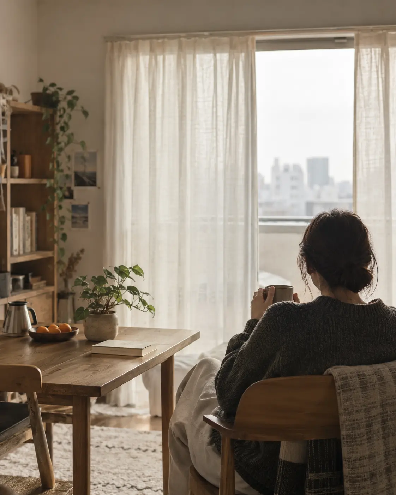
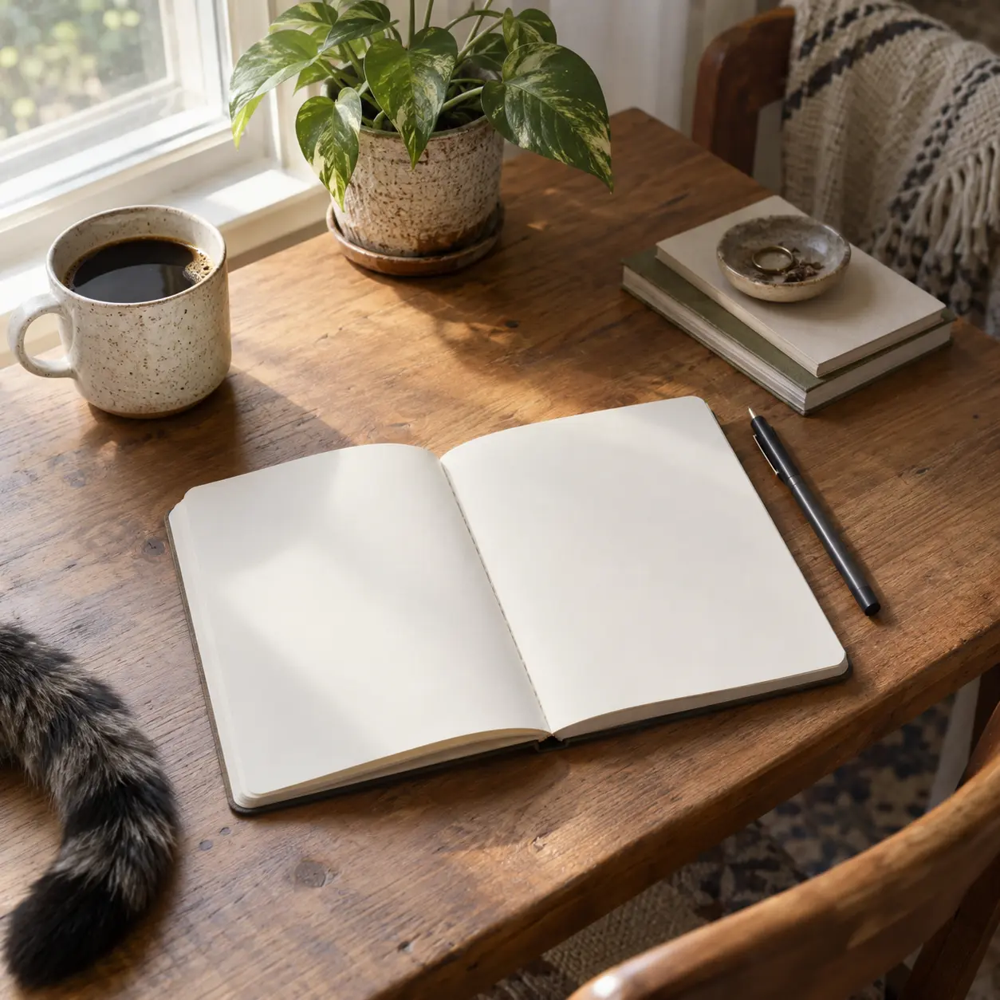

ぼちぼちラジオ
疲れた夜や移動中に。心や暮らし、自分との付き合い方を一緒に考える音声と動画。
YouTubeで聴くBOCHIBOCHI · LIFE AT YOUR PACE
毎日をちゃんと生きているだけで、意外と疲れる。
一気に変えなくていい。自分のペースで、少しずつ。
頑張りすぎず、諦めすぎず。

深呼吸してから、
次のことを考える。
SMALL STEPS, AT YOUR OWN PACE.
休む日があってもいい。
また動けそうなときに、一歩。
ABOUT
仕事には行けている。誰かとも話せる。
周りから見れば、大きな問題はない。
それでも、「このままでいいのかな」と思う夜があります。
ぼちぼちは、そんな日常のそばで、一緒に考えるブランドです。
最近、こんなことありませんか。

OUR PROMISE
今を認めてから、無理のない一歩へ。
ぼちぼちが大切にする、4つの約束です。
「早く変わろう」と、不必要に追い立てません。
できなかったことより、今の気持ちを大切にします。
正解を押しつけず、自分で選べる余白を残します。
できそうなことを、今日ひとつだけ提案します。
SERVICES
疲れた夜や移動中に。心や暮らし、自分との付き合い方を一緒に考える音声と動画。
YouTubeで聴く今日の調子、できたこと、明日のひとつ。3つの問いで自分を振り返る小さな道具。記録は自分の端末にだけ残ります。
ノートを開く毎日ひとつ決めて、できたことを置いて帰る。誰かと静かに続ける会員制コミュニティ。
作業室についてBOCHIBOCHI WORKROOM · BETA
限定 100名まで、無料で参加できます。
競うためでも、すごい成果を見せるためでもありません。
自分のペースを守りながら、今日を少し前に進める場所です。
Discordの招待リンクが開きます。読むだけの参加も歓迎です。
今日の作業報告
火曜日 · 21:08全部できなくても、ひとつできたら十分です。
人生、ぼちぼちいきましょう。今日は、全部できなくてもいい。
一つできたら、それで十分。
何もできない日は、休めばいい。
また明日、できそうなことから。